Все графики второго этапа
Значения подписаны у каждой точки. JS показана с множителем 1000, доли смен Top-1 - в процентах; разности долей - в процентных пунктах.
Средний Top-10 overlap: сравнение масок

Средний Top-10 overlap: последние десять фильмов

Средний Top-10 overlap: изменение только времени

Средняя JS divergence: сравнение масок

Средняя JS divergence: последние десять фильмов

Средняя JS divergence: изменение только времени

Доля смен Top-1: сравнение масок

Доля смен Top-1: последние десять фильмов

Доля смен Top-1: изменение только времени

Доля возмущений, изменивших временные интервалы модели

Средняя JS divergence: изменение только маски

Средний Top-10 overlap: сравнение масок

Разность Top-10 overlap: динамическая минус фиксированная
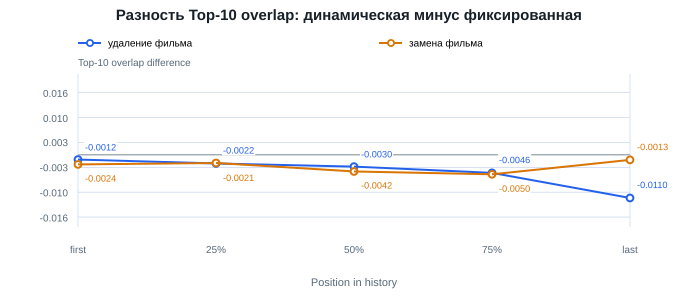
Средний Top-10 overlap: изменение только маски
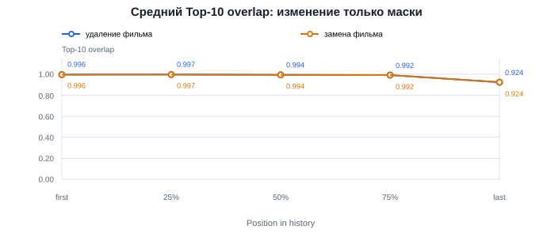
Средняя JS divergence: сравнение масок
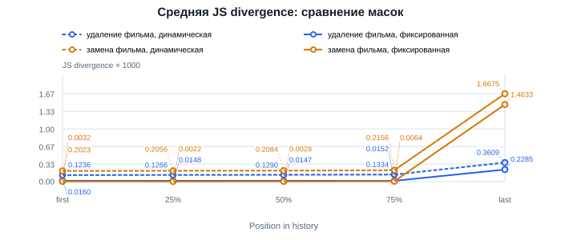
Разность JS divergence: динамическая минус фиксированная
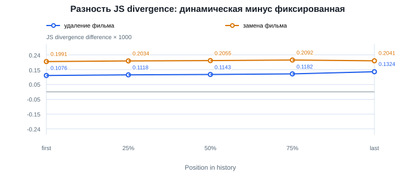
Средняя JS divergence: изменение только маски
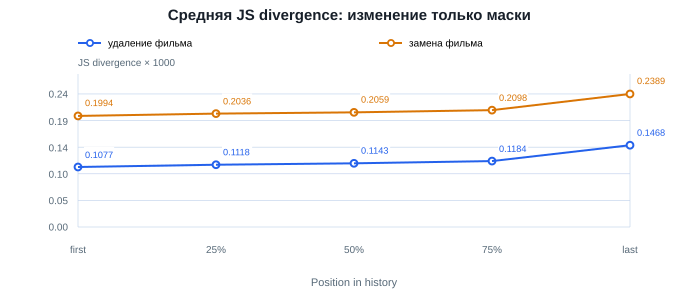
Доля смен Top-1: сравнение масок
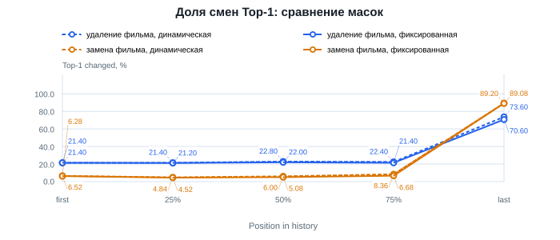
Разность долей смен Top-1: динамическая минус фиксированная
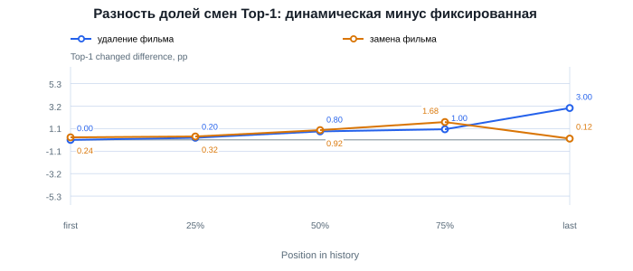
Доля смен Top-1: изменение только маски
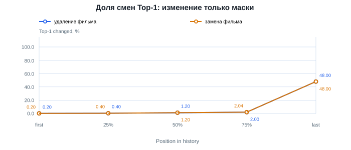
Средний Top-10 overlap: сравнение масок (последние десять)
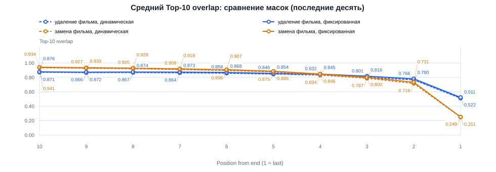
Разность Top-10 overlap: динамическая минус фиксированная (последние десять)
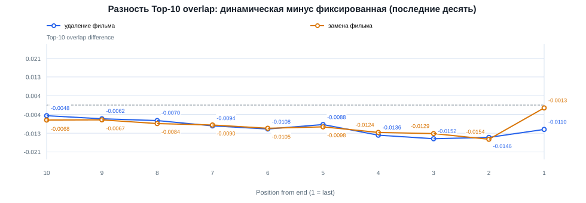
Средний Top-10 overlap: изменение только маски (последние десять)
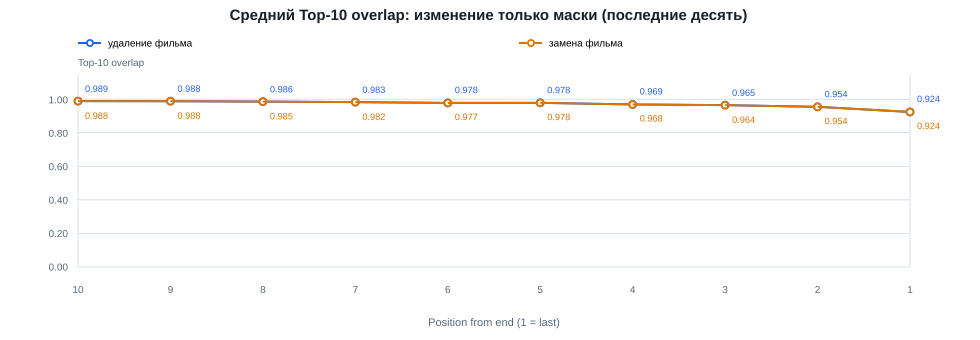
Средняя JS divergence: сравнение масок (последние десять)
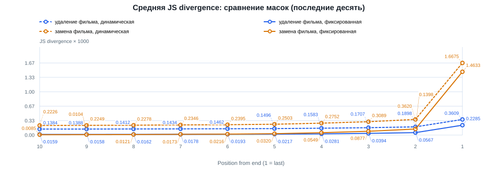
Разность JS divergence: динамическая минус фиксированная (последние десять)
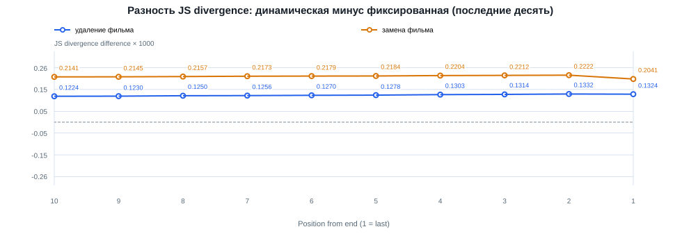
Средняя JS divergence: изменение только маски (последние десять)
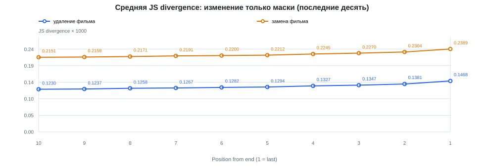
Доля смен Top-1: сравнение масок (последние десять)
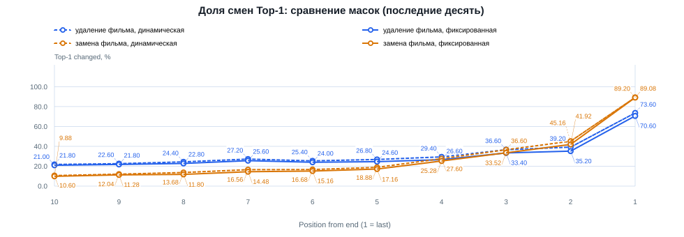
Разность долей смен Top-1: динамическая минус фиксированная (последние десять)
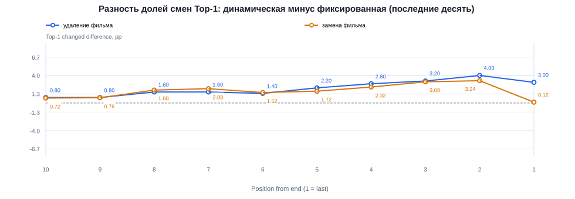
Доля смен Top-1: изменение только маски (последние десять)
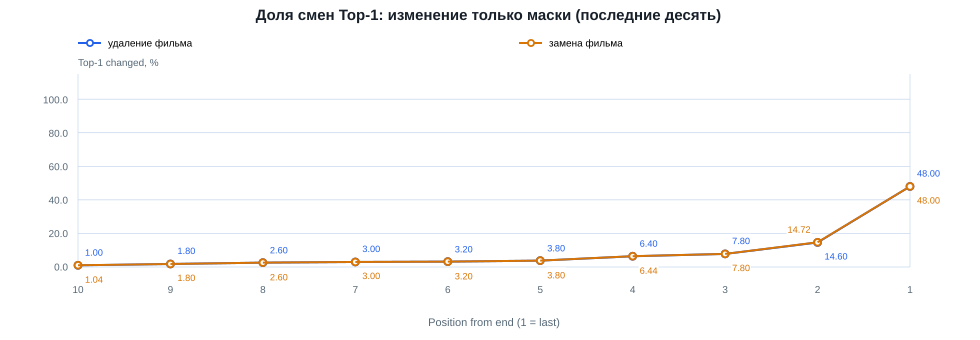
Средний Top-10 overlap: изменение только времени
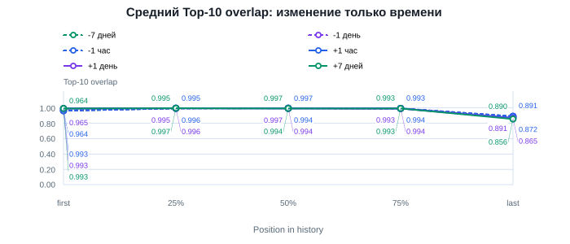
Средняя JS divergence: изменение только времени
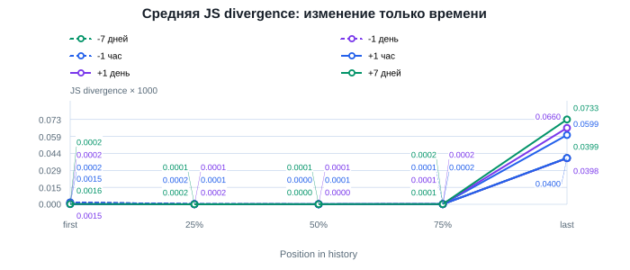
Доля смен Top-1: изменение только времени
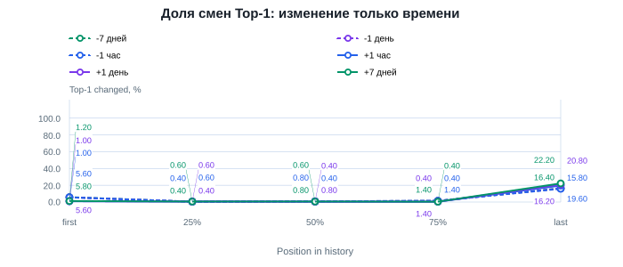
Средний Top-10 overlap по позиции изменения

Средняя JS divergence по позиции изменения

Доля смен Top-1 по позиции изменения